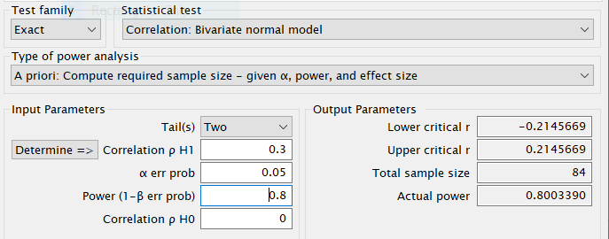
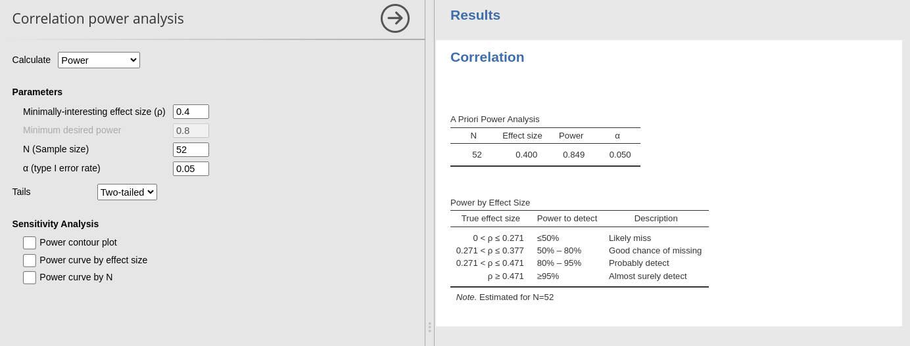
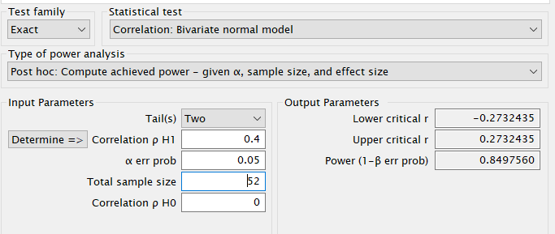
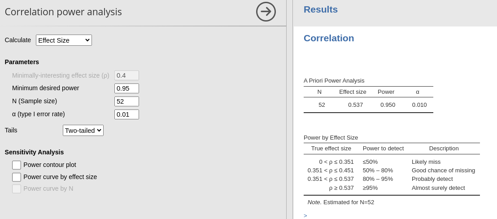
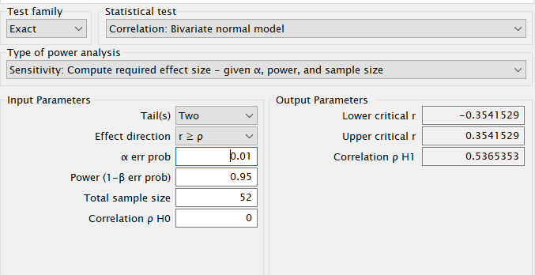
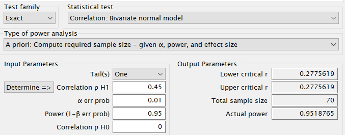

Independent sample T-test: Equivalence tests
Power Analysis
PAMLj version ≥ 0.2.0
Here we compare the results of PAMLj with published results and other software that performs equivalence tests for the t-test.
Independent sample t-test
For the independent t-test, we will refer to Lakens (2017) Table 1 , in which sample size are reported for an equivalence test with expected value \(\delta=0\) and varying “Bound”, in PAMLj refereed to as ‘equivalence limit’. Lakens (2017) Table 1 reports results for \(\alpha=.05\) and \(\alpha=.01\). The table (available here) is reproduced below.

The table reports the required N to obtain a sufficient power (80% or 90%) given a certain \(\alpha\) and a certain limit \(\Delta\) of equivalence.
PAMLj
For the firs test, we insert an Equivalence
limit of \(.1\), an expected
\(\delta=0\), power=.80 and \(\alpha=.05\).


R
pwr::pwr.r.test(r=.3,power=.8,sig.level=.05)##
## approximate correlation power calculation (arctangh transformation)
##
## n = 84.07364
## r = 0.3
## sig.level = 0.05
## power = 0.8
## alternative = two.sidedG*Power

If we round the results, they are the same
Example 2
- Aim = power
- Expected r = .4
- N = 52
- Alpha = .05
PAMLj

R
pwr::pwr.r.test(r=.4,n=52,sig.level=.05)##
## approximate correlation power calculation (arctangh transformation)
##
## n = 52
## r = 0.4
## sig.level = 0.05
## power = 0.8485972
## alternative = two.sidedG*Power

Results are the same at the third decimal place, which can be consider quite good.
Example 3
- Aim = minimal effect size
- power = .95
- N = 52
- Alpha = .01
PAMLj

R
pwr::pwr.r.test(n=52,power=.95,sig.level=.01)##
## approximate correlation power calculation (arctangh transformation)
##
## n = 52
## r = 0.5369775
## sig.level = 0.01
## power = 0.95
## alternative = two.sidedG*Power

Again, rounding a the third decimal place, results are the same.
Example 4
- Aim = Sample size
- power = .95
- Expected r = .45
- Alpha = .01
- Tails = “two.sided”
PAMLj

R
pwr::pwr.r.test(r=.45,power=.95,sig.level=.01,alternative="greater")##
## approximate correlation power calculation (arctangh transformation)
##
## n = 69.45436
## r = 0.45
## sig.level = 0.01
## power = 0.95
## alternative = greaterG*power

In this case, notice that PAMLj yield 69, which is rounded for 69.45, whereas G*Power round it up to 70. Thus, results are quite in line.
References
’